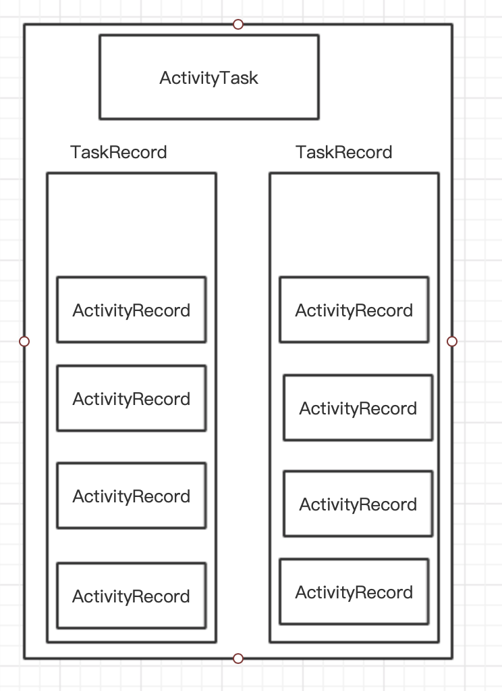
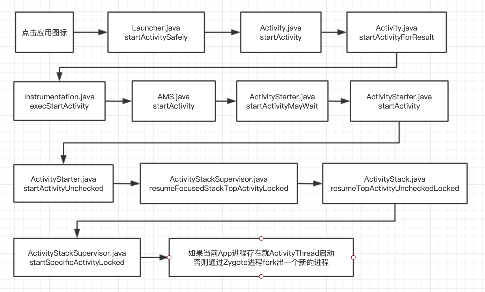

AMS分析 作用 ActivityManagerService 是Framework层的核心服务之一，ActivityManagerService是Binder的子类,它的功能主要以下三点：
四大组件调度 ActivityManagerService最主要的功能就是统一的管理者activity ，service,broadcast,provider的创建,运行,关闭.我们在应用程序中启动acitivity,关闭acitiviy等操作最终都是要通过ams来统一管理的
进程管理 Android平台中很少能接触到进程的概念，取而代之的是有明确定义的四大组件。但是作为运行在Linux用户空间内的一个系统或框架，Android不仅不能脱离进程，反而要大力利用Linux OS提供的进程管理机制和手段，更好地为自己服务。作为Android平台中组件运行管理的核心服务，ActivityManagerService当仁不让地接手了这方面的工作。目前，AMS对进程的管理仅涉及两个方面：
调节进程的调度优先级和调度策略。
调节进程的OOM值。
内存管理 我们知道当一个进程中的acitiviy全部都关闭以后,这个空进程并不会立即就被杀死.而是要等到系统内存不够时才会杀死.但是实际上ActivityManagerService并不能够管理内存,android的内存管理是Linux内核中的内存管理模块和OOM进程一起管理的.Android进程在运行的时候,会通过Ams把每一个应用程序的oom_adj值告诉OOM进程,这个值的范围在-16-15,值越低说明越重要,越不会被杀死.当发生内存低的时候,Linux内核内存管理模块会通知OOm进程根据AMs提供的优先级强制退出值较高的进程.因此Ams在内存管理中只是扮演着一个提供进程oom_adj值的功能.真正的内存管理还是要调用OOM进程来完成.
AMS 重要的数据结构 ActivityRecord 作用就是记录 Activity 的所有信息，是在 Activity 启动的时候创建，具体是在 ActivityStarter 的 startActivity 方法中被创建的，下面我们看一下它内部结构:
成员名称
类型
说明
service
ActivityManagerService
AMS 的引用
Info
ActivityInfo
Activity 中代码和 AndroidManifes 设置的节点信息，比如 launchMode
launchedFromPackage
String
启动 Activity 的包名
taskAffinity
String
Activity 希望归属的栈
Task
TaskRecord
ActivityRecord 所在的 TaskRecord
App
ProcessRecord
ActivityRecord 所在的应用程序进程
tate
ActivityState
当前 Activity 的状态
icon
Int
Activity 的图标资源标识符
theme
Int
Activity 的主题资源标识符
从上面表格可以看出 ActivityRecord 的作用，其内部存储了 Activity 的所有信息，包括 AMS 的引用、AndroidManifes 节点信息、Activity 状态、Activity 资源信息和 Activity 进程相关信息等.需要注意的是其中包含该 ActivityRecord 所在的 TaskRecord ，这就将 ActivityRecord 和 TaskRecord 关联在一起，它们是 Activity 任务栈模型的重要成员
TaskRecord TaskRecord 用来描述一个 Activity 任务栈，其内部也有很多的成员变量，这里挑出一些重要成员变量进行介绍
成员名称
类型
说明
taskId
Int
任务栈的唯一标识符
affinity
String
任务栈的倾向性
intent
Intent
启动这个任务栈的 Intent
mActivities
ArrayList
按照历史顺序排列的 Activity 记录
mStack
ActivityStack
当前归属的 ActivityStack
mService
ActivityManagerService
AMS 的引用
从上面表格中可以发现 TaskRecord 的作用。其内部存储了任务栈的所有信息，包括任务栈的唯一标识符、任务栈的倾向性、任务栈中的 Activity 记录和 AMS 的引用等，需要注意的是其中含有 ActivityStack, 也就是当前 Activity 任务栈所归属的 ActivityStack
ActivityStack ActivityStack 是一个管理类，用来管理系统所有 Activity ，其内部维护了 Activity 的所有状态，特殊状态的 Activity 以及和 Activity 相关的列表等数据。ActivityStack 是由 ActivityStackSupervisor 来进行管理的，而 ActivityStackSupervisor 在 AMS 的构造方法中被创建
1 2 3 4 5 6 7 8 9 10 11 12 13 14 //ActivityStackSupervisor.java public class ActivityStackSupervisor extends ConfigurationContainer implements DisplayListener { ... /** 用来存储 Launcher APP 的所有的 Activity */ ActivityStack mHomeStack; /** 表示当前正在接收输入或启动下一个 Activity 的所有 Activity. */ ActivityStack mFocusedStack; /** 表示此前接收输入的所有的 Activity */ private ActivityStack mLastFocusedStack; ... }
这里提供了 3 种 ActivityStack,分别为 mHomeStack、mFocusedStack、mLastFocusedStack。通过 ActivityStackSupervisor 提供了获取上述 ActivityStack 的方法
在 ActivityStack 中通过枚举存储了 Activity 的所有的状态，如下所示:
1 2 3 4 5 6 7 8 9 10 11 12 enum ActivityState { INITIALIZING, RESUMED, PAUSING, PAUSED, STOPPING, STOPPED, FINISHING, DESTROYING, DESTROYED }
在 ActivityStack 中定义了一些特殊状态的 Activity, 如下所示:
1 2 3 4 5 6 7 8 9 10 11 12 13 14 15 16 17 18 19 20 21 22 23 24 /** * 正在暂停的 Activity */ ActivityRecord mPausingActivity = null; /** * 上一个已经暂停的 Activity */ ActivityRecord mLastPausedActivity = null; /** * 最近一次没有历史记录的 Activity */ ActivityRecord mLastNoHistoryActivity = null; /** * 已经 resume 的 Activity */ ActivityRecord mResumedActivity = null; /** * 传递给 convertToTranslucent 方法的最上层的 Activity */ ActivityRecord mTranslucentActivityWaiting = null;
可以看到这些特殊状态类型都是 ActivityRecord, ActivityRecord 是用来记录所有的 Activity 信息。
在 ActivityStack 中维护了很多 ArrayList ,这些 ArrayList 中的元素类型主要有 ActivityRecord 和 TaskRecord, 如下所示:
ArrayList
元素类型
说明
mTaskHisttory
TaskRecord
所有没有被销毁的 Activity 任务栈
mLRUActivities
ActivityRecord
正在运行的 Activity ,列表中的第一个条目是最近最少使用的 Activity
mNoAnimActivities
ActivityRecord
不考虑转换动画的 Activity
mValidateAppTokens
TaskGroup
用于与窗口管理器验证应用令牌
ActivityStack 维护了元素类型为 TaskRecord 的列表，这样 ActivityStack 和 TaskRecord 就有了关联， Activity 任务栈存储在 ActivityStack 中
Activity 栈管理 我们平时做应用开发都知道 Activity 是放入在 Activity 任务栈中的，有了任务栈，系统和开发者就能够更好地应用和管理 Activity,来完成各种业务逻辑，这一小节我们就来学习 Activity 栈管理相关的知识:
Activity 任务栈模型 下面先以一张图来看一下 Activity 任务栈模型的重要组成部分

Launch Mode LaunchMode 相信大家都不陌生，用于设定 Activity 的启动方式，无论是哪种启动方式，所启动的 Activity 都会位于 Activity 的栈顶。下面来介绍 LaunchMode 启动模式:
standerd：默认模式，每次启动 Activity 都会创建一个新的 Activity 实例。
singleTop: 如果要启动的 Activity 已经在栈顶，则不会重新创建 Activity, 同时该 Activity 的 onNewIntent 方法会被调用。如果要启动的 Activity 不在栈顶，则会重新创建该 Activity 的实例。
singleTask: 如果要启动的 Activity 已经存在栈中，那么该 Activity 不会重新创建实例，它会将存在栈中的 Activity 出栈，同时该 Activity 的 onNewIntent 方法会被调用。如果要启动的 Activity 不在栈中，则会重新创建该 Activity 实例。如果要启动的 Activity 不在栈中并且该 栈 也不存在，那么首先要创建一个新栈，然后创建该 Activity 实例并压入到新栈中。
singleInstance: 和 singleTask 基本类似，不同的是启动 Activity 时，首先要创建一个新栈，然后创建该 Activity 实例并压入新栈中，新栈中只会存在着一个 Activity 实例。
Intent 的 FLAG 在 Intent 中定义了很多 flag ，其中有几个可以设定 Activity 的启动方式，如果 LaunchMode 和 Flag 设定的 Activity 的启动方式有冲突，则以 Flag 设定的为准。
FLAG_ACTIVITY_SINGLE_TOP: 和 LaunchMode 中的 singleTop 效果一致。
FLAG_ACTIVITY_NEW_TASK: 和 LauncheMode 中的 singleTask 效果一致。
FLAG_ACTIVITY_CLEAR_TOP: 在 LaunchMode 中没有与此对应的模式，如果要启动的 Activity 已经存在于栈中，则将所有位于它上面的 Activity 出栈。singleTask 默认具有此标记位的效果。
除了上述这三个 FLAG , 还有一些 FLAG 对我们分析栈管理有些帮组。
FLAG_ACTIVITY_NO_HISTORY: Activity 一旦退出，就不会存在于栈中。同样地，也可以在 AndroidManifest.xml 中设置 andorid:noHistory。
FLAG_ACTIVITY_MULTIPLE_TASK: 需要和 FLAG_ACTIVITY_NEW_TASK 一同使用才有效果，系统会启动一个新的栈来容纳新启动的 Activity.
FLAG_ACTIVITY_EXCLUDE_FROM_RECENTS: Activity 不会被放入到 “最近启动的 Activity” 列表中。
FLAG_ACTIVITY_ BROUGHT_TO_FRONT: 这个标志位通常不是由应用程序中的代码设置的，而是 Launch Mode 为 singleTask 时，由系统自动加上的。
FLAG_ACTIVITY_LAUNCHED_FROM_HISTORY: 这个标志位通常不是由应用程序中的代码设置的，而是从历史记录中启动的(长按 Home 键调出)
FLAG_ACTIVITY_CREATE_TASK: 需要和 FLAG_ACTIVITY_NEW_TASK 一同使用才有效果，用于清除与启动的 Activity 相关的栈的所有其它 Activity。
AMS协助启动App 当我们点击某个应用的快捷图标的时候，就会通过 Launcher 请求 AMS 来启动该应用程序。
Launcher extend Activity
执行Launcher的startActivitySafely
1 2 3 4 5 6 7 8 9 10 11 12 13 14 15 16 public boolean startActivitySafely(View v, Intent intent, ItemInfo item) { if (mIsSafeModeEnabled && !Utilities.isSystemApp(this, intent)) { Toast.makeText(this, R.string.safemode_shortcut_error, Toast.LENGTH_SHORT).show(); return false; } /** * 1. 为启动应用的 Activity 添加一个新的任务栈 */ intent.addFlags(Intent.FLAG_ACTIVITY_NEW_TASK); if (v != null) { intent.setSourceBounds(getViewBounds(v)); } //执行 Activity 的 startActivity 函数 startActivity(intent, optsBundle); }
1 2 3 4 5 6 7 8 9 10 11 12 13 14 15 16 17 //Activity.java @Override public void startActivity(Intent intent, @Nullable Bundle options) { /** * 判断是否有传参行为 */ if (options != null) { /** * 1. 调用 Activity startActivityForResult 函数，将参数传递下去 */ startActivityForResult(intent, -1, options); } else { // Note we want to go through this call for compatibility with // applications that may have overridden the method. startActivityForResult(intent, -1); } }
在 Activity startActivity 函数中最终会调用 startActivityForResult 函数，第二个参数 -1 代表 Activity 不需要知道结果，第三个参数就是启动设置进去的参数 Bundle.
1 2 3 4 5 6 7 8 9 10 11 12 13 14 15 16 17 18 19 20 21 22 23 24 25 26 27 28 29 30 31 32 //Activity.java public void startActivityForResult(@RequiresPermission Intent intent, int requestCode, @Nullable Bundle options) { /** * 1. mParent 代表 Activity 的父类 */ if (mParent == null) { options = transferSpringboardActivityOptions(options); /** * Instrumentation：主要用来监控应用程序和系统的交互 * * 2. 调用 Instrumentation 的 execStartActivity 函数。 * */ Instrumentation.ActivityResult ar = mInstrumentation.execStartActivity( this, mMainThread.getApplicationThread(), mToken, this, intent, requestCode, options); if (ar != null) { /** * 3. 内部给 Activity onActivityResult 回调 */ mMainThread.sendActivityResult( mToken, mEmbeddedID, requestCode, ar.getResultCode(), ar.getResultData()); } ... } else { ... } }
注释 1 处的 mParent 代表的是 Activity 的类型，表示当前 Activity 的父类。因为目前根 Activity 还没有创建出来，因此判断成立执行注释 2 Instrumentation 的 execStartActivity 函数，注释 3 就是如果是以 startActivityForResult 函数启动的 Activity 那么就会回调给 Activity结果
mInstrumentation.execStartActivity
1 2 3 4 5 6 7 8 9 10 11 12 13 14 15 16 17 18 19 20 21 22 23 24 25 //Instrumentation.java public ActivityResult execStartActivity( Context who, IBinder contextThread, IBinder token, Activity target, Intent intent, int requestCode, Bundle options) { //1. 拿到 IAPPlicationThead 这个类可以说是是启动 Activity 的关键 IApplicationThread whoThread = (IApplicationThread) contextThread; .... try { intent.migrateExtraStreamToClipData(); intent.prepareToLeaveProcess(who); /** * 2. 拿到 AMS 代理对象 IActivityManager 调用 startActivity 函数 */ int result = ActivityManager.getService() .startActivity(whoThread, who.getBasePackageName(), intent, intent.resolveTypeIfNeeded(who.getContentResolver()), token, target != null ? target.mEmbeddedID : null, requestCode, 0, null, options); checkStartActivityResult(result, intent); } catch (RemoteException e) { throw new RuntimeException("Failure from system", e); } return null; }
ActivityManager.getService()
1 2 3 4 5 6 7 8 9 10 11 12 13 14 15 public static IActivityManager getService () return IActivityManagerSingleton.get(); } private static final Singleton<IActivityManager> IActivityManagerSingleton = new Singleton<IActivityManager>() { @Override protected IActivityManager create () final IBinder b = ServiceManager.getService(Context.ACTIVITY_SERVICE); final IActivityManager am = IActivityManager.Stub.asInterface(b); return am; } };
getService 函数调用 IActivityManagerSingleton 的 get 函数 ，IActivityManagerSingleton 是一个 Singleton 类。最后会直接回调到 AMS 中的 startActivity 函数。
AMS.java startActivity
1 2 3 4 5 6 7 8 9 10 11 12 13 14 15 16 17 18 19 20 21 22 23 24 25 26 27 28 29 30 31 32 33 public final int startActivity(IApplicationThread caller, String callingPackage, Intent intent, String resolvedType, IBinder resultTo, String resultWho, int requestCode, int startFlags, ProfilerInfo profilerInfo, Bundle bOptions) { /** * 调用内部 startActivityAsUser 函数 */ return startActivityAsUser(caller, callingPackage, intent, resolvedType, resultTo, resultWho, requestCode, startFlags, profilerInfo, bOptions, UserHandle.getCallingUserId()); } @Override public final int startActivityAsUser(IApplicationThread caller, String callingPackage, Intent intent, String resolvedType, IBinder resultTo, String resultWho, int requestCode, int startFlags, ProfilerInfo profilerInfo, Bundle bOptions, int userId) { /** * 1. 判断调用者进程是否被隔离 */ enforceNotIsolatedCaller("startActivity"); /** * 2. 检查调用者权限 */ userId = mUserController.handleIncomingUser(Binder.getCallingPid(), Binder.getCallingUid(), userId, false, ALLOW_FULL_ONLY, "startActivity", null); // TODO: Switch to user app stacks here. /** * 3. 调用 ActivityStarter 的 startActivityMayWait 函数，启动的理由 */ return mActivityStarter.startActivityMayWait(caller, -1, callingPackage, intent, resolvedType, null, null, resultTo, resultWho, requestCode, startFlags, profilerInfo, null, null, bOptions, false, userId, null, null, "startActivityAsUser"); }
在 AMS 的 startActivity 函数中调用内部的 startActivityAsUser 函数，在该函数中我们主要做了 3 个步骤
判断调用者进程是否被隔离
检查调用者权限
调用 ActivityStarter 的 startActivityMayWait 函数，启动 Activity 的理由
startActivityMayWait 函数中需要注意倒数第二个参数 TaskRecord,代表启动的 Activity 任务栈，最后一个是启动的理由
ActivityStarter startActivityMayWait
1 2 3 4 5 6 7 8 9 10 11 12 13 14 15 final int startActivityMayWait() { ... /** * ActivityStarter 是加载 Activity 控制类，会搜集所有的逻辑来决定如果将 Intent 和 Flags 转换为 Activity * ，并将Activity 和 Task 以及 Stack 相关联。 */ int res = startActivityLocked(caller, intent, ephemeralIntent, resolvedType, aInfo, rInfo, voiceSession, voiceInteractor, resultTo, resultWho, requestCode, callingPid, callingUid, callingPackage, realCallingPid, realCallingUid, startFlags, options, ignoreTargetSecurity, componentSpecified, outRecord, container, inTask, reason); ... }
会调用到ActivityStarter.java 的startActivity
1 2 3 4 5 6 7 8 9 10 11 12 13 14 15 16 17 18 19 20 21 22 23 24 25 26 27 28 29 30 31 32 33 34 35 36 37 38 39 40 41 42 43 44 45 46 47 48 49 50 51 52 53 54 55 56 57 58 59 60 61 62 63 64 65 66 //ActivityStarter.java private int startActivity(IApplicationThread caller, Intent intent, Intent ephemeralIntent, String resolvedType, ActivityInfo aInfo, ResolveInfo rInfo, IVoiceInteractionSession voiceSession, IVoiceInteractor voiceInteractor, IBinder resultTo, String resultWho, int requestCode, int callingPid, int callingUid, String callingPackage, int realCallingPid, int realCallingUid, int startFlags, ActivityOptions options, boolean ignoreTargetSecurity, boolean componentSpecified, ActivityRecord[] outActivity, ActivityStackSupervisor.ActivityContainer container, TaskRecord inTask) { ... /** * 1. 判断 IApplicationThread 是否为空 */ if (caller != null) { /** * 1.1 得到 Launcher 所在进程 */ callerApp = mService.getRecordForAppLocked(caller); /** * 1.2 获得 Launcher 进程的 pid , uid */ if (callerApp != null) { callingPid = callerApp.pid; callingUid = callerApp.info.uid; } else { Slog.w(TAG, "Unable to find app for caller " + caller + " (pid=" + callingPid + ") when starting: " + intent.toString()); err = ActivityManager.START_PERMISSION_DENIED; } } ... /** * 2. 创建即将要启动 Activity 的描述类 */ ActivityRecord r = new ActivityRecord(mService, callerApp, callingPid, callingUid, callingPackage, intent, resolvedType, aInfo, mService.getGlobalConfiguration(), resultRecord, resultWho, requestCode, componentSpecified, voiceSession != null, mSupervisor, container, options, sourceRecord); if (outActivity != null) { /** * 3. 将创建的 ActivityRecord 赋值给 ActivityRecord 数组的第一个位置，最后会把 outActivity 传递给 startActivity */ outActivity[0] = r; } if (r.appTimeTracker == null && sourceRecord != null) { // If the caller didn't specify an explicit time tracker, we want to continue // tracking under any it has. r.appTimeTracker = sourceRecord.appTimeTracker; } ... doPendingActivityLaunchesLocked(false); /** * 4. 继续调用内部的 startActivity 函数 */ return startActivity(r, sourceRecord, voiceSession, voiceInteractor, startFlags, true, options, inTask, outActivity); }
该类函数逻辑比较多，大概以上面注释总结了几点小点
判断上层传递过来的 IApplicationThread 是否为空，因为这里我们是一路传递下来的，所以不为空。
注释 1.1 处调用 AMS 的 getRecordForAppLocked 函数得到的代表 Launcher 进程的 callerApp 对象，它是 ProcessRecord 类型的， ProcessRecord 用于描述一个应用程序进程。
创建 ActivityRecord 类，用于描述一个 Activity 所有的信息。
将创建出来 ActivityRecord 赋值给 ActivityRecord 数组的第一个位置
继续调用内部重载函数 startActivity 把 启动 Activity 的描述信息也一并传递过去。
1 2 3 4 5 6 7 8 9 10 11 12 13 14 15 16 17 18 19 20 21 private int startActivity(final ActivityRecord r, ActivityRecord sourceRecord, IVoiceInteractionSession voiceSession, IVoiceInteractor voiceInteractor, int startFlags, boolean doResume, ActivityOptions options, TaskRecord inTask, ActivityRecord[] outActivity) { int result = START_CANCELED; try { /** * 拿到 WMS */ mService.mWindowManager.deferSurfaceLayout(); /** * 继续调用内部函数 startActivityUnchecked */ result = startActivityUnchecked(r, sourceRecord, voiceSession, voiceInteractor, startFlags, doResume, options, inTask, outActivity); } finally { .... return result; }
接着调用 ActivityStarter 内部函数 startActivityUnchecked
1 2 3 4 5 6 7 8 9 10 11 12 13 14 15 16 17 18 19 20 21 22 23 24 25 26 27 28 29 30 31 32 33 34 35 36 37 38 39 40 41 42 43 44 45 46 47 48 49 50 51 52 53 54 55 56 57 58 59 60 61 62 63 64 65 66 //ActivityStarter.java /** * 主要处理 栈管理相关的逻辑 * @param r * @param sourceRecord * @param voiceSession * @param voiceInteractor * @param startFlags * @param doResume * @param options * @param inTask * @param outActivity * @return */ private int startActivityUnchecked(final ActivityRecord r, ActivityRecord sourceRecord, IVoiceInteractionSession voiceSession, IVoiceInteractor voiceInteractor, int startFlags, boolean doResume, ActivityOptions options, TaskRecord inTask, ActivityRecord[] outActivity) { ... /** * 1. 判断条件是否满足，是否是 新创建的任务栈模式 */ if (mStartActivity.resultTo == null && mInTask == null && !mAddingToTask && (mLaunchFlags & FLAG_ACTIVITY_NEW_TASK) != 0) { newTask = true; /** * 2. 创建新的 TaskRecord ,用来描述 Activity 任务栈 */ result = setTaskFromReuseOrCreateNewTask( taskToAffiliate, preferredLaunchStackId, topStack); } else if (mSourceRecord != null) { result = setTaskFromSourceRecord(); } else if (mInTask != null) { result = setTaskFromInTask(); } else { setTaskToCurrentTopOrCreateNewTask(); } ... if (mDoResume) { final ActivityRecord topTaskActivity = mStartActivity.getTask().topRunningActivityLocked(); if (!mTargetStack.isFocusable() || (topTaskActivity != null && topTaskActivity.mTaskOverlay && mStartActivity != topTaskActivity)) { ... mWindowManager.executeAppTransition(); } else { ... if (mTargetStack.isFocusable() && !mSupervisor.isFocusedStack(mTargetStack)) { mTargetStack.moveToFront("startActivityUnchecked"); } /** * 3. 调用 ActivityStackSupervisor 的 resumeFocusedStackTopActivityLocked 函数 */ mSupervisor.resumeFocusedStackTopActivityLocked(mTargetStack, mStartActivity, mOptions); } } else { mTargetStack.addRecentActivityLocked(mStartActivity); } ... return START_SUCCESS; }
startActivityUnchecked 函数主要处理与栈管理相关的逻辑。在注释 1 处我们得知启动 Activity 时会将 Intent 的
Flag 设置为 FLAG_ACTIVITY_NEW_TASK 模式，这样注释 1 条件满足，接着执行注释 2 处的 setTaskFromReuseOrCreateNewTask 函数，其内部会创建一个新的 TaskRecord ，用来描述一个 Activity 的任务栈。
ActivityStackSupervisor 的 resumeFocusedStackTopActivityLocked
1 2 3 4 5 6 7 8 9 10 11 12 13 14 15 16 17 18 19 20 21 22 23 24 25 26 27 28 29 //ActivityStackSupervisor.java boolean resumeFocusedStackTopActivityLocked( ActivityStack targetStack, ActivityRecord target, ActivityOptions targetOptions) { //需要启动的目标栈不为空，并且启动的栈跟需要启动栈一样就执行 if (targetStack != null && isFocusedStack(targetStack)) { /** * ActivityStack 描述堆栈的 */ return targetStack.resumeTopActivityUncheckedLocked(target, targetOptions); } /** * 1. 获取需要启动的 Activity 所在栈的栈顶 不是处于停止状态的 ActivityRecord */ final ActivityRecord r = mFocusedStack.topRunningActivityLocked(); /** * 2. 如果 ActivityRecord 不为 null,或者要启动的 Activity 的状态不是Resumed 状态 */ if (r == null || r.state != RESUMED) { /** * 3.代表是即将启动的 Activity */ mFocusedStack.resumeTopActivityUncheckedLocked(null, null); } else if (r.state == RESUMED) { // Kick off any lingering app transitions form the MoveTaskToFront operation. mFocusedStack.executeAppTransition(targetOptions); } return false; }
这里主要是获取正在运行的任务栈，如果获取到的栈不为空并且不是 Resumed 状态 ,那么就代表即将要启动一个新的 Activity，注释 3 的代码如下：
ActivityStack.java resumeTopActivityUncheckedLocked
1 2 3 4 5 6 7 8 9 10 11 12 13 14 15 16 17 18 19 //ActivityStack.java boolean resumeTopActivityUncheckedLocked(ActivityRecord prev, ActivityOptions options) { ... boolean result = false; try { // Protect against recursion. mStackSupervisor.inResumeTopActivity = true; /** * 1.调用内部 resumeTopActivityInnerLocked 函数 */ result = resumeTopActivityInnerLocked(prev, options); } finally { mStackSupervisor.inResumeTopActivity = false; } mStackSupervisor.checkReadyForSleepLocked(); return result; }
把 mStackSupervisor.inResumeTopActivity 设置为 true ,然后继续调用内部 resumeTopActivityInnerLocked 函数，代码如下:
1 2 3 4 5 6 7 8 9 10 11 12 13 14 15 //ActivityStack.java private boolean resumeTopActivityInnerLocked(ActivityRecord prev, ActivityOptions options) { ... /** * 1. 调用 startSpecificActivityLocked 函数 */ mStackSupervisor.startSpecificActivityLocked(next, true, true); } if (DEBUG_STACK) mStackSupervisor.validateTopActivitiesLocked(); return true; }
ActivityStackSupervisor.java startSpecificActivityLocked
1 2 3 4 5 6 7 8 9 10 11 12 13 14 15 16 17 18 19 20 21 22 23 24 25 26 27 28 29 30 31 32 33 34 35 36 37 //ActivityStackSupervisor.java void startSpecificActivityLocked(ActivityRecord r, boolean andResume, boolean checkConfig) { /** * 1. 获取即将启动的 Activity 所在的应用程序进程 */ ProcessRecord app = mService.getProcessRecordLocked(r.processName, r.info.applicationInfo.uid, true); r.getStack().setLaunchTime(r); /** * 2. 判断要启动的 Activity 所在的应用程序进程如果已经运行的话，就会调用注释 3 */ if (app != null && app.thread != null) { try { if ((r.info.flags&ActivityInfo.FLAG_MULTIPROCESS) == 0 || !"android".equals(r.info.packageName)) { app.addPackage(r.info.packageName, r.info.applicationInfo.versionCode, mService.mProcessStats); } /** * 3. 如果已经正在运行调用 realStartActivityLocked 函数 */ realStartActivityLocked(r, app, andResume, checkConfig); return; } catch (RemoteException e) { ... } } //4. mService.startProcessLocked(r.processName, r.info.applicationInfo, true, 0, "activity", r.intent.getComponent(), false, false, true); }
这里主要判断当前启动 Activity 所在的进程是否已经运行，如果运行调用注释 3 ，如果处于没有运行的状态调用注释 4,最后会通知 AMS 与 Zygote 通信请求创建一个新的进程，
1 2 3 4 5 6 7 8 9 10 11 12 13 14 15 16 17 18 19 20 21 22 23 24 25 26 27 28 29 30 //ActivityStackSupervisor.java final boolean realStartActivityLocked(ActivityRecord r, ProcessRecord app, boolean andResume, boolean checkConfig) throws RemoteException { ... /*** 这里的 app.thread 代表的是 IApplicationThread ,调用它内部 scheduleLaunchActivity 函 数, * 它的实现在 ActivityThread 的内部类 ApplicationThread ,其中 ApplicationThread 继承了 IApplicationThread.Stub., * app 指的是Activity 所在的应用程序进程。 */ app.thread.scheduleLaunchActivity(new Intent(r.intent), r.appToken, System.identityHashCode(r), r.info, // TODO: Have this take the merged configuration instead of separate global and // override configs. mergedConfiguration.getGlobalConfiguration(), mergedConfiguration.getOverrideConfiguration(), r.compat, r.launchedFromPackage, task.voiceInteractor, app.repProcState, r.icicle, r.persistentState, results, newIntents, !andResume, mService.isNextTransitionForward(), profilerInfo); ... } catch (RemoteException e) { ... return true; }
这段代码指的就是要在目标应用进程进行启动 Activity 。剩下的工作就是ActivityThread来完成了。
流程图 这块调用可以用下流程图表示：

startProcessLocked 通过调用多个startProcessLocked方法后最终将调用startProcess方法，不过需要重点看一下上面的第四个startProcessLocked，在该方法中有个entryPoint参数为 “android.app.ActivityThread”，这个参数将在后文讲到创建应用进程后启动ActivityThread会用到。然后在startProcess方法里将调用Process.start来发送应用创建进程的请求。这样AMS就将发送请求的事交给了Process
ActivityThread 当Zygote进程孵化出应用进程后会执行ActivityThread的main方法
启动Application
1 2 3 4 5 6 7 8 9 10 11 public static void main(String[] args) { .... //创建主线程的Looper以及MessageQueue Looper.prepareMainLooper(); ... //AMS绑定ApplicationThread对象,即应用进程绑定到AMS thread.attach(false, startSeq); //开启主线程的消息循环 Looper.loop(); ... }
ActivityThread.java attach
1 2 3 4 5 6 7 8 9 10 11 12 13 14 15 private void attach(boolean system, long startSeq) { sCurrentActivityThread = this; mSystemThread = system; if (!system) { android.ddm.DdmHandleAppName.setAppName("<pre-initialized>", UserHandle.myUserId()); RuntimeInit.setApplicationObject(mAppThread.asBinder()); final IActivityManager mgr = ActivityManager.getService(); try { //AMS绑定ApplicationThread对象 mgr.attachApplication(mAppThread, startSeq); } catch (RemoteException ex) { throw ex.rethrowFromSystemServer(); } }
可以看到由于在ActivityThread的attach中我们传入的是false，故在attach方法中将执行!system里的代码，通过调用AMS的attachApplication来将ActivityThread中的内部类ApplicationThread对象绑定至AMS，这样AMS就可以通过这个代理对象 来控制应用进程。
ActivityManagerService.java attachApplication
1 2 3 4 5 6 7 8 9 10 11 12 13 14 15 16 17 18 19 20 21 22 23 24 25 26 27 28 29 30 31 32 33 34 35 36 public final void attachApplication(IApplicationThread thread, long startSeq) { synchronized (this) { int callingPid = Binder.getCallingPid(); final int callingUid = Binder.getCallingUid(); final long origId = Binder.clearCallingIdentity(); attachApplicationLocked(thread, callingPid, callingUid, startSeq); Binder.restoreCallingIdentity(origId); } } private final boolean attachApplicationLocked(IApplicationThread thread, int pid, int callingUid, long startSeq) { .... //将应用进程的ApplicationThread对象绑定到AMS，即AMS获得ApplicationThread的代理对象 thread.bindApplication(...); boolean badApp = false; boolean didSomething = false; // See if the top visible activity is waiting to run in this process... if (normalMode) { try { //启动Activity if (mStackSupervisor.attachApplicationLocked(app)) { didSomething = true; } } catch (Exception e) { Slog.wtf(TAG, "Exception thrown launching activities in " + app, e); badApp = true; } } ..... }
在AMS的attachApplication方法中调用了attachApplicationLocked进行绑定
ActivityThread.ApplicationThread bindApplication
1 2 3 4 5 6 7 8 9 10 11 12 13 14 15 16 17 18 19 20 21 22 23 24 25 public final void bindApplication(...) { .... //向H发送绑定ApplicationThread对象的消息 sendMessage(H.BIND_APPLICATION, data); } void sendMessage(int what, Object obj) { sendMessage(what, obj, 0, 0, false); } private void sendMessage(int what, Object obj, int arg1, int arg2, boolean async) { ... Message msg = Message.obtain(); msg.what = what; msg.obj = obj; msg.arg1 = arg1; msg.arg2 = arg2; if (async) { msg.setAsynchronous(true); } mH.sendMessage(msg); }
1 2 3 4 5 6 7 8 9 10 11 12 13 14 15 16 17 18 //线程所需要的Handler，内部定义了一组消息类型，主要包括四大组件的启动和停止过程 class H extends Handler { public static final int BIND_APPLICATION = 110; ... public void handleMessage(Message msg) { if (DEBUG_MESSAGES) Slog.v(TAG, ">>> handling: " + codeToString(msg.what)); switch (msg.what) { case BIND_APPLICATION: Trace.traceBegin(Trace.TRACE_TAG_ACTIVITY_MANAGER, "bindApplication"); AppBindData data = (AppBindData)msg.obj; handleBindApplication(data); Trace.traceEnd(Trace.TRACE_TAG_ACTIVITY_MANAGER); break; ... } }
ActivityThread handleBindApplication
1 2 3 4 5 6 7 8 9 10 11 12 13 14 15 16 17 18 19 @UnsupportedAppUsage private void handleBindApplication(AppBindData data) { .... try { // If the app is being launched for full backup or restore, bring it up in // a restricted environment with the base application class. app = data.info.makeApplication(data.restrictedBackupMode, null); mInitialApplication = app; try { //调用Application的onCreate的方法 //故Application的onCreate比ActivityThread的main方法慢执行 //但是会比所有该应用Activity的生命周期先调用，因为此时的Activity还没启动 mInstrumentation.callApplicationOnCreate(app); } ... } }
启动Activity 在attachApplicationLocked中，先绑定Application，再启动Activity
ActivityStackSupervisor.java attachApplicationLocked
1 2 3 4 5 6 7 8 9 10 11 12 13 14 15 16 17 18 19 20 21 22 23 24 25 26 27 boolean attachApplicationLocked(ProcessRecord app) throws RemoteException { final String processName = app.processName; boolean didSomething = false; for (int displayNdx = mActivityDisplays.size() - 1; displayNdx >= 0; --displayNdx) { ... for (int stackNdx = display.getChildCount() - 1; stackNdx >= 0; --stackNdx) { .... for (int i = 0; i < size; i++) { final ActivityRecord activity = mTmpActivityList.get(i); if (activity.app == null && app.uid == activity.info.applicationInfo.uid && processName.equals(activity.processName)) { try { //真正启动Activity，也是普通Activity的启动过程 if (realStartActivityLocked(activity, app, top == activity /* andResume */, true /* checkConfig */)) { didSomething = true; } } catch (RemoteException e) { ... } } } } } return didSomething; }
ActivityStackSupervisor.java realStartActivityLocked
1 2 3 4 5 6 7 8 9 10 11 12 13 14 15 16 17 18 19 20 21 22 23 24 25 26 27 28 29 30 31 32 33 34 35 final boolean realStartActivityLocked(ActivityRecord r, ProcessRecord app, boolean andResume, boolean checkConfig) throws RemoteException { ..... final ClientTransaction clientTransaction = ClientTransaction.obtain(app.thread, r.appToken); //添加callback，首先会执行callback中的方法 //此时的ActivityLifecycleItem为LaunchActivityItem clientTransaction.addCallback(LaunchActivityItem.obtain(new Intent(r.intent), System.identityHashCode(r), r.info, // TODO: Have this take the merged configuration instead of separate global // and override configs. mergedConfiguration.getGlobalConfiguration(), mergedConfiguration.getOverrideConfiguration(), r.compat, r.launchedFromPackage, task.voiceInteractor, app.repProcState, r.icicle, r.persistentState, results, newIntents, mService.isNextTransitionForward(), profilerInfo)); //判断此时的生命周期是resume还是pause final ActivityLifecycleItem lifecycleItem; if (andResume) { lifecycleItem = ResumeActivityItem.obtain(mService.isNextTransitionForward()); } else { lifecycleItem = PauseActivityItem.obtain(); } //设置当前的生命周期 clientTransaction.setLifecycleStateRequest(lifecycleItem); // mService为AMS对象,getLifecycleManager得到ClientLifecycleManager mService.getLifecycleManager().scheduleTransaction(clientTransaction); ...... } .... return true; }
在realStartActivityLocked方法中为ClientTransaction对象添加LaunchActivityItem的callback，然后设置当前的生命周期状态，由于我们是根Activity的启动，很显然这里的生命周期为ResumeActivityItem，最后调用ClientLifecycleManager.scheduleTransaction方法执行
ClientLifecycleManager.java scheduleTransaction
1 2 3 4 5 6 7 8 9 10 11 12 13 14 15 16 void scheduleTransaction(ClientTransaction transaction) throws RemoteException { final IApplicationThread client = transaction.getClient(); transaction.schedule(); if (!(client instanceof Binder)) { transaction.recycle(); } } public void schedule() throws RemoteException { //1.mClient是IApplicationThread类型， //2.ActivityThread的内部类ApplicationThread派生这个接口类并实现了对应的方法 //3.ActivityThread实际调用的是他父类ClientTransactionHandler的scheduleTransaction方法。 mClient.scheduleTransaction(this); }
ClientTransactionHandler.java scheduleTransaction
1 2 3 4 5 6 void scheduleTransaction(ClientTransaction transaction) { transaction.preExecute(this); sendMessage(ActivityThread.H.EXECUTE_TRANSACTION, transaction); } abstract void sendMessage(int what, Object obj);
1 2 3 4 5 6 7 8 9 10 11 12 13 14 15 16 17 18 19 20 21 22 23 24 25 26 27 28 29 30 31 32 33 34 35 public void handleMessage(Message msg) { if (DEBUG_MESSAGES) Slog.v(TAG, ">>> handling: " + codeToString(msg.what)); switch (msg.what) { //处理事务，处理活动的启动，生命周期的转化等 case EXECUTE_TRANSACTION: final ClientTransaction transaction = (ClientTransaction) msg.obj; //切换Activity的状态 mTransactionExecutor.execute(transaction); if (isSystem()) { // Client transactions inside system process are recycled on the client side // instead of ClientLifecycleManager to avoid being cleared before this // message is handled. transaction.recycle(); } // TODO(lifecycler): Recycle locally scheduled transactions. break; .... } ... } public void execute(ClientTransaction transaction) { final IBinder token = transaction.getActivityToken(); log("Start resolving transaction for client: " + mTransactionHandler + ", token: " + token); //先执行callbacks，当根活动首次启动时会有callback，callback会执行onCreate方法 //其它活动切换状态时没有callback executeCallbacks(transaction); //改变活动的生命周期状态 executeLifecycleState(transaction); mPendingActions.clear(); log("End resolving transaction"); }
在execute方法中重点关注两个方法：executeCallbacks，由于我们现在分析的是根Activity的启动流程，从上面也可以知道此时的callback是不为null的，所以会执行executeCallbacks，最终会执行Activity的onCreate方法.此时根Activity就已经启动成功了。executeLifecycleState方法是用来改变活动的生命周期状态的，如果是根Activity的启动，最终将会执行onStart和onResume方法。
我们可以得知Activity的启动的整体流程：
1. Launcher进程请求AMS
2. AMS发送创建应用进程请求
3. Zygote进程接受请求并孵化应用进程
4. 应用进程启动ActivityThread
5. 应用进程绑定到AMS
6. AMS发送启动Activity的请求
7. ActivityThread的Handler处理启动Activity的请求